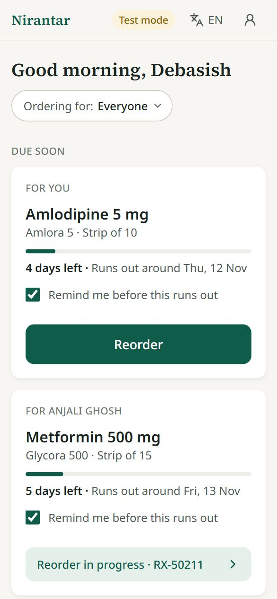
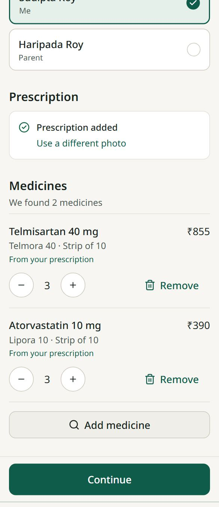
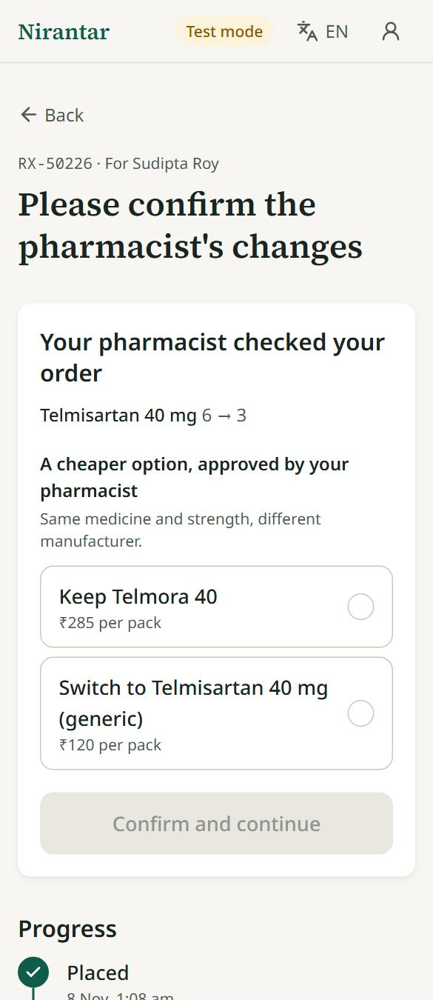
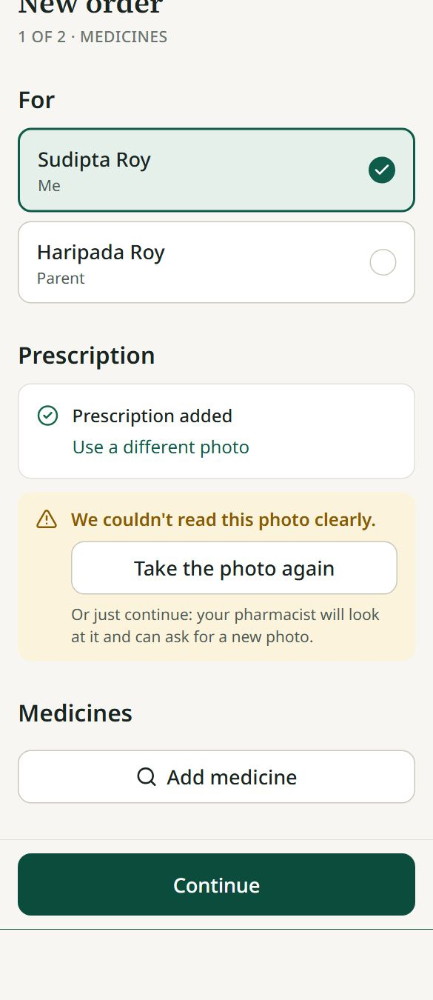
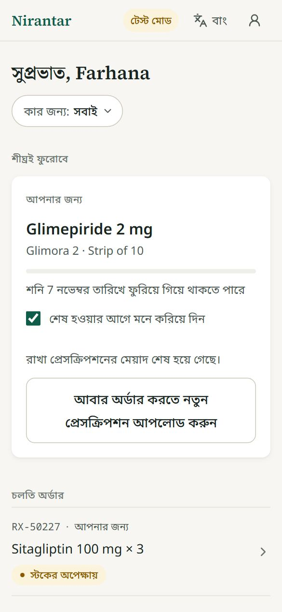
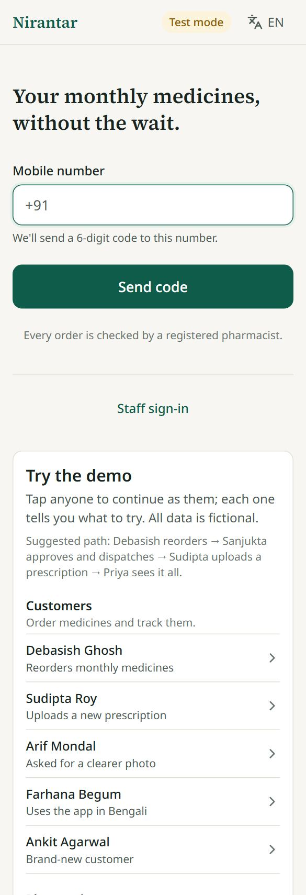
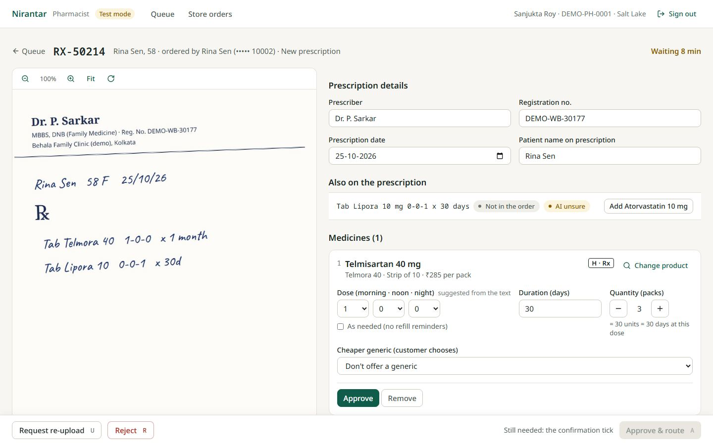
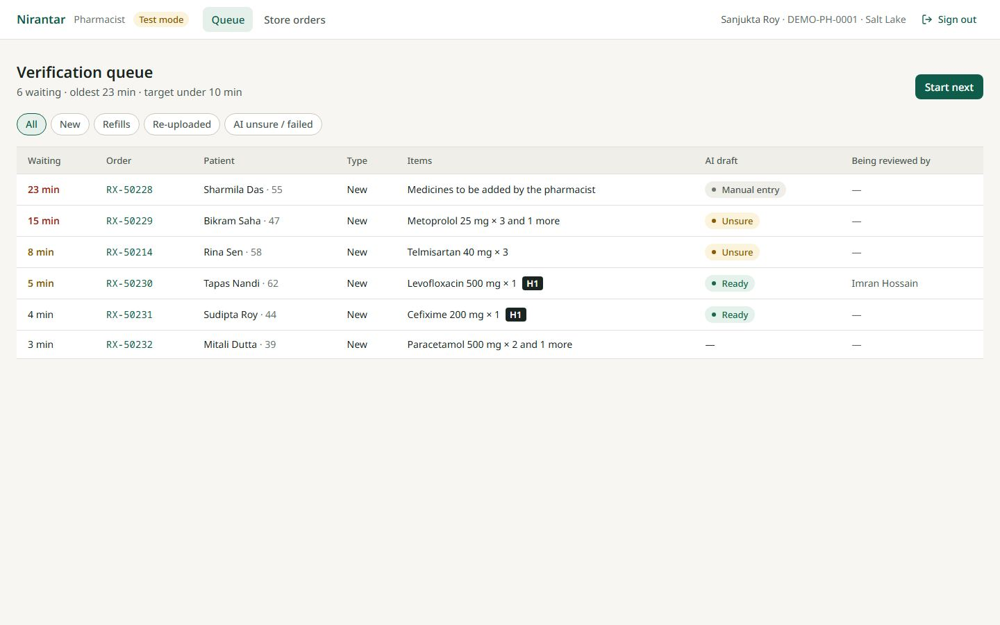
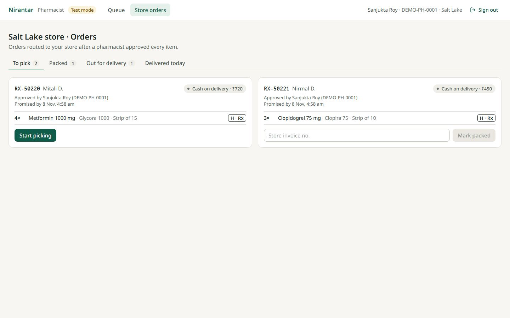
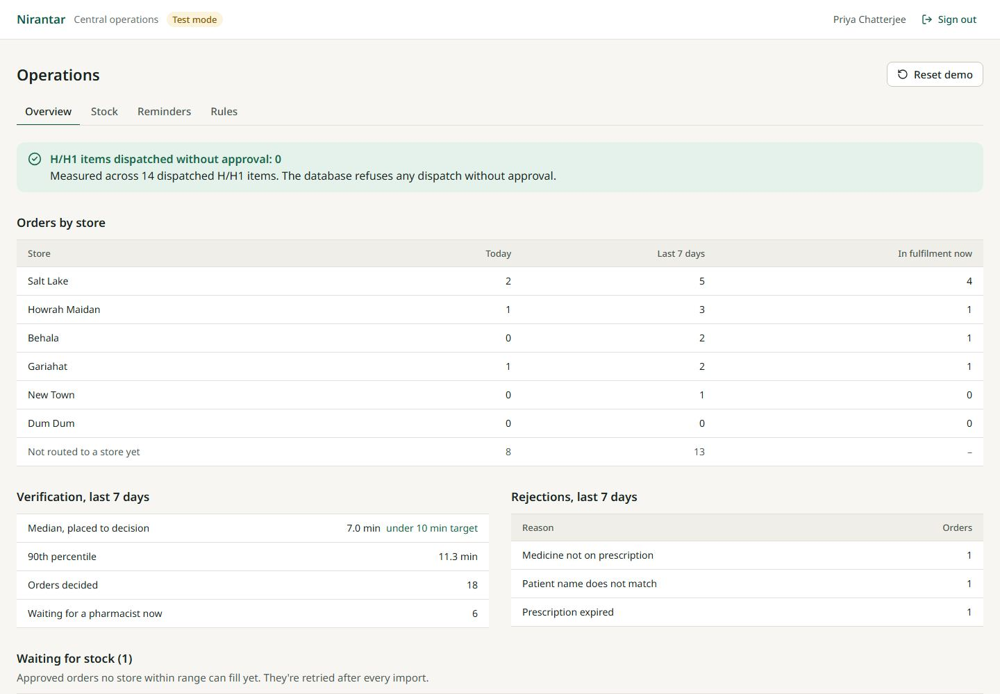

Technical Design Document · refill and pharmacist verification platform for Company A, Kolkata
Company A's regular customers order by phone or WhatsApp, refills depend on memory, prescriptions sit on store phones, and stores can't see each other's stock. The brief puts the cost at ₹1.33 crore a year. Nirantar lets a customer, often someone ordering for a parent, reorder in about a minute. A registered pharmacist checks every item beside the prescription. The order then goes to the nearest store with stock, and the customer is reminded before the medicine runs out.
The decision that shapes the design: the brief's hard part is that no Schedule H item may ship without approval. A bug in the app must not be able to break that, so the rule lives in the database. Even a raw SQL update can't move an order to picking unless a pharmacist approved every item exactly as it will ship (section 6).
| Requirement | Status | Where, and any limit |
|---|---|---|
| Reorder with prescription upload | Core, works | Home → one-tap reorder → cart → order |
| AI reads prescriptions as a draft | Core, works | Gemini, with failure paths and a measured eval (section 7) |
| Pharmacist queue: side by side, approve, edit, reject | Core, works | Queue and workspace; re-upload request; per-item decisions |
| Routing to nearest store with stock, from daily CSV | Core, works | Row-locked reservation; CSV preview, then all-or-nothing apply |
| Refill reminders with one-tap reorder | Core, works | Daily scheduled job; messages go to a test inbox (mock) |
| Block Schedule H/H1 without approval | Core, works | Database trigger; also measured live on the dashboard |
| Schedule X and narcotics never sold online | Works | Fixed in code and database; not a configurable rule |
| OTP login, family profiles, search, cart, tracking | Works | OTP shown on screen in test mode (allowed mock) |
| UPI and cash on delivery (test mode) | Works | UPI is a simulated success/failure sheet |
| Refill subscriptions | Works | Created on delivery; reminder switch per medicine |
| Generics with pharmacist approval and customer consent | Works | From our catalog; consent is stored and checked by the gate |
| Store screen: pick, pack, invoice, handover | Works | Unpaid UPI blocks handover |
| H1 register | Works | Written in the same transaction as handover |
| Dashboard and one view of all stores | Works | Orders by store, median/p90 verification, rejections, all orders |
| Configurable rules | Partly | H/H1 rules are data the code reads; no editing screen yet |
| Encrypted prescriptions, access log | Works | AES-256-GCM; every view logged; no screen to read the log yet |
| Bengali, Hindi, English | Customer side | Staff screens are English (A10); translations need native review |
Success measures from the brief: median verification under 10 minutes and zero unapproved dispatches are both shown live on the dashboard. Customer adoption and drop-off can't be measured without real customers.
Everything not stated in the brief is listed here. [Brief] marks the client's own words.
| ID | Assumption |
|---|---|
| A1 | Verification is a shared queue: any registered pharmacist can verify any order. This is what makes a 10-minute median achievable. |
| A2 | Each pharmacist belongs to one store and also does its pick, pack and handover. The brief names no separate store-staff role. |
| A3 | A prescription is valid for 180 days. A configurable placeholder for the client's compliance team, not a legal fact. |
| A4 | Location is the centre of one of about 30 Kolkata/Howrah localities; distance is straight-line; delivery radius 8 km; same-day if routed before 18:00 IST. |
| A5 | The stock CSV is the physical shelf count in sale packs, and a full list for each store in the file: missing SKUs become 0. A count older than 48 hours stops a store being used for routing. |
| A6 | Whole packs only; no loose tablets. |
| A7 | Automatic reminders only for a fixed dose confirmed by a pharmacist. "As needed" medicines get none. |
| A8 | UPI is requested after approval, when the final amount is known. Handover requires UPI paid or cash on delivery. |
| A9 | Schedule classifications, brands and prices are synthetic, except the three sample items in the brief. |
| A10 | Customer screens are in English, Hindi and Bengali; staff screens are in English. Translations are AI-assisted drafts. |
| A11 | Every order is verified, refills included, and every item, OTC included ("approves every item" [Brief]). |
| A12 | The store shown on RX-50214 and RX-50219 before approval is read as a nearest-store preview; the real assignment happens at approval. |
| A13 | The H1 register entry is written at handover, treated as the moment of sale. |
| A14 | All people, phones, doctors and registration numbers are fictional. No SMS, WhatsApp or payment is really sent. |
| A15 | 6 synthetic stores (3 named in the brief, 3 added) and 31 products. Nothing in the code or dashboard is limited to 6. |
| A16 | OTP codes and one-tap sign-in exist only when APP_ENV isn't production. A real launch needs an SMS provider. |
| A17 | Cheaper generics come from our own catalog: same molecule, strength and form. The AI doesn't suggest them. |
| A18 | The public demo is rebuilt every night at 02:00 IST, so its dates and stock counts stay current. Changes made by a reviewer don't survive that. |
| A19 | Reminders go out at 09:00 IST, 5, 2 and 0 days before the estimated run-out date. |
| Layer | Choice | Why, and what was rejected |
|---|---|---|
| Backend shape | One Express service, layered: routes → services → pure domain functions | One deploy and real transactions across orders, stock and approvals. Microservices and queues would add failure modes with no benefit at this size. |
| Database | PostgreSQL + Prisma, plus hand-written SQL triggers and CHECKs | Row locks, constraints and triggers enforce the hard part. A document database can't give that guarantee. |
| Frontend | React, Vite, TypeScript, Tailwind, TanStack Query, Radix | A phone-first web app, as the brief asks for a customer web app. Next.js wasn't needed: there's nothing to render on the server, and everything sits behind sign-in. |
| Shared code | shared/ workspace: enums, order state machine, API types | Frontend and backend can't drift apart on statuses or rules. |
| Sign-in | Sessions in Postgres, HttpOnly cookie, first-party through the Vercel rewrite | Can be revoked on the server, and JavaScript can't read it. Rejected JWT in local storage for those two reasons. |
| Files | Encrypted bytes in a separate database table | Render's free tier has no persistent disk. Object storage is the production next step. |
| Background work | AI read in the API process; a read stuck over 2 minutes is marked failed the next time it's looked at. Daily jobs through GitHub Actions | No worker or Redis needed at this volume. Render's free tier sleeps, so an in-process cron wouldn't be reliable. |
| Hosting | Vercel, Render and Neon free tiers; API and database both in Singapore | Zero budget for this build, and co-located API and database. Neon has no India region, which a real launch must revisit under DPDP. |
Money is stored as integer paise. Tables are snake_case so the SQL triggers stay readable. Each table below exists to answer one question the brief asks.
| Table | What it holds, and the rule that matters |
|---|---|
users, patients, addresses | Account with a role. A pharmacist must have a registration number and a store (CHECK). One account holds several patients, for family ordering. |
products, schedule_rules | Catalog with schedule. Rules for OTC, H and H1 are data; a CHECK stops X or NDPS ever getting a rule row, so their ban can't be configured away. |
stores, store_stock, stock_imports | On hand and reserved per store; available is the difference. An import's SHA-256 stops the same file being applied twice. |
prescriptions, prescription_files, prescription_access_logs | AI status and draft, review status, doctor details. The encrypted image is in a separate table. Every view and AI read is logged. |
orders | Status, store, address copy, payment, invoice, rider, and a version so a stale screen gets a 409 instead of overwriting a decision. CHECKs: invoice when packed, store when assigned, paid or COD at handover. |
order_items | Current product and quantity beside approved_by, approved_product, approved_quantity, approved_prescription, approved_generic, customer_choice, consent_at. The gate compares the two. |
order_events, h1_register | The audit trail of every status change, and the legal register with prescriber and patient details. |
refill_subscriptions, reminders, messages | Daily units and run-out date from the pharmacist's dose. A unique key on (subscription, cycle, offset) means a reminder can't be sent twice. Messages are the test outbox. |
Side paths: from the queue to on hold (new photo needed), awaiting customer (changes or generic to confirm) or rejected; from approved to awaiting stock; cancelled before picking, which releases reserved stock. Allowed moves live in one table in shared/, and each move writes an audit event.
Stores within 8 km with a fresh stock count are tried nearest first. Each store gets one short transaction that locks its stock rows in product order, checks every item and reserves all or nothing. A 20-order race test for the last strip gives it to exactly one order, and one store per transaction means two orders can't deadlock. If no store can fill the order it waits, and it's retried after every stock import. The CSV shows a preview; any bad row blocks the whole file and nothing changes.
On delivery the system works out units = packs × pack size, days = units ÷ daily dose, and adds them to any supply left. The daily job at 09:00 IST sends reminders 5, 2 and 0 days before run-out. It holds back if an order for that medicine is already in progress. Running it twice sends nothing new. If the prescription has expired, the message asks for a new upload instead of a reorder. Messages say "may run out around" a date and never give dosing advice.
| Rule | Enforced by |
|---|---|
| Schedule X and NDPS can't enter any order | Trigger on order_items, independent of configuration; search shows them disabled for customers and pharmacists |
| No order reaches picking or later unless every active item is approved by an active registered pharmacist | Dispatch gate trigger on orders, on INSERT too, so nothing can be created already "packed" |
| What ships must equal what was approved | The gate compares current product, quantity and prescription with the approved values, so an edit after approval can't slip through |
| A generic ships only with pharmacist approval and customer consent | Gate requires customer_choice = SWITCH and consent_at |
| Prescription verified where one is needed; H1 register row at handover | Gate reads schedule_rules; the register row is written in the handover transaction |
The dashboard's "H/H1 items dispatched without approval" is counted from the data on each load, not assumed. If the gate ever failed, that number would show it.
Pipeline. Check the real file type from its bytes → fix rotation, strip metadata including GPS, resize → encrypt and store → respond at once → read in the background with Gemini (structured JSON, validated with Zod) → match to the catalog → save a draft with status READY, UNSURE, UNREADABLE or FAILED.
The AI only transcribes; our code decides. Matching is deterministic: name similarity plus exact strength. Products and generics come from our catalog. The AI has no tools and can't approve, dispatch or invent a product, and text in an image is treated as data.
| When it goes wrong | What happens |
|---|---|
| Fields uncertain, or no catalog match on a clear photo | UNSURE: "AI unsure" or "Not found on prescription" tags for the pharmacist. No percentages, because model confidence isn't a calibrated probability. |
| Name the AI doubts (low confidence) | Never selects a product; the pharmacist sees candidates. |
| Different strength written than we stock | Never auto-selected. A bare number ("Glimora 2") must equal the product's strength. |
| Blurred photo, or not a prescription | UNREADABLE: the customer is asked for a new photo or can send it anyway. The pharmacist can request a re-upload. |
| Overload, daily limit, timeout, invalid JSON | Tries up to three models in order, then FAILED. The customer can still order, and the pharmacist enters items by hand or presses Retry AI. |
| Server restarts mid-read | A read still "reading" after 2 minutes is marked failed the next time it's looked at. |
npm run ai:eval scores labelled synthetic prescriptions and saves the numbers to docs/ai-eval-results.json. It counts a wrong product separately from accuracy, because a wrong product is the dangerous failure.
| Samples read | Medicines and strengths correct | Doses correct | Wrong product selected | Blurred / not a prescription | Median read |
|---|---|---|---|---|---|
| 16 of 16 | 24 of 24 lines | 24 of 24 lines | 0 | Both UNREADABLE | 12.3 s |
The brief says customers are often worried or ordering for a parent, and that design counts as much as features. So the direction is a trusted pharmacy slip: warm paper, dark ink, one deep green, hairlines instead of boxes. Red appears only when something is blocked or failed. There's one raised card per person, and no promotions.










Responsive. Customer screens are one 560 px column from 360 px up. Staff screens are desktop-first, and tables scroll inside their panel on phones. Automated tests assert no sideways scroll at 360 px. Loading uses skeletons, and after 4 seconds a note explains a server cold start. Errors offer a retry, empty states offer the next action, and buttons use minimum heights because Bengali labels run longer.
| Area | What's in place |
|---|---|
| Sign-in | OTP stored as a keyed hash; 5-minute expiry, 5 attempts, 3 codes per phone in 15 minutes. Staff passwords use Argon2. New session id at sign-in; cookie is HttpOnly, Secure, SameSite=Lax. |
| Access control | Role checks on every route group. Customer queries are scoped to the account, and someone else's record returns 404, not 403. Pharmacists fulfil only their own store. Operations can't approve or view prescription images. |
| Inputs | Zod validation on all input; file type read from bytes; 10 MB limit; raw SQL only through parameterised templates, enforced by a lint rule; Origin check against cross-site requests. |
| Health data (DPDP) | AES-256-GCM with the record id bound in, so an encrypted file can't be moved to another record. Images served only to the owner or a pharmacist, with no-store. Every view is logged. Consent taken at onboarding. Request logs hold only id, method, URL and status. |
| Secrets | Only variable names are in the repository; the app refuses to start without required values. Git history was scanned for each secret value. |
| Test-mode features | Shown OTP, one-tap sign-in, Reset demo and nightly refresh don't exist with APP_ENV=production. Tests prove the routes return 404 and nothing is wiped. |
This is a prototype, not a certified compliance system. The rules need review by the client's legal and compliance team. On Gemini's free tier Google may use inputs to improve its products, so only synthetic images are used and the upload screen warns against real documents; production needs a paid tier with a data agreement.
| Level | What it covers |
|---|---|
| 161 unit and integration tests (Vitest, real Postgres) | Dispatch gate and X/NDPS triggers attacked with raw SQL; roles and ownership; OTP; routing race for the last strip; reminder maths and no-duplicates; CSV validation; order flow; AI failure handling; matcher; demo features absent in production. |
| 6 browser journeys (Playwright) | Upload at 360 px, then pharmacist, customer confirmation and store through delivery; reminder and one-tap reorder; language; one-tap demo; stock file. They run on their own database with the AI off, so the manual path is always exercised. |
| CI (GitHub Actions) | Lint, typecheck, tests and build, plus the browser journeys, on every push. |
| Live checks | The full journey on the deployed site, including the real AI read, 9.9 MB and 4.3 MB uploads through the Vercel rewrite, the secure cookie and Reset demo. The production bundle was also tested surviving the database dropping all connections, as Neon does when it scales to zero. |
The retake and Retry AI fixes were checked against the real AI by script; they aren't in CI, because CI runs with the AI off.
| Cut or limited today | Why |
|---|---|
| Real SMS, WhatsApp and UPI | Mocks are allowed by the brief; these need provider accounts |
| Real road distance; 6 stores, not 46 | Paid maps; the brief gives no store list |
| Splitting an order across stores; central warehouse stock | One store fills the whole order, or it waits. Simpler and safer for this slice |
| Editing screen for rules; screen to read access logs | Rules are read-only data, and logs are written but viewed only in the database |
| Hindi/Bengali staff screens; native review of translations | Time. Customer screens came first (A10) |
| Content-Security-Policy on the frontend; formal accessibility audit | Not done. Security headers are on the API only; contrast and keyboard use were designed in but not audited |
| Free-tier hosting | About 20 AI reads a day per model; sign-in rate limit is shared because all traffic arrives through Vercel; the demo stays awake only through an external uptime monitor |
I built this with an AI coding assistant (Claude Code), which wrote most of the code, tests and the first draft of this document under my direction. I chose the problem, the stack and the free-tier constraint, reviewed and corrected the plan, and tested the main flows by hand on a local build. The checks on the live site were scripted. The decision log (docs/DECISIONS.md) and commit history show how choices were made and changed, including where testing proved an earlier choice wrong. Gemini is a separate thing: it's the product's prescription reader.